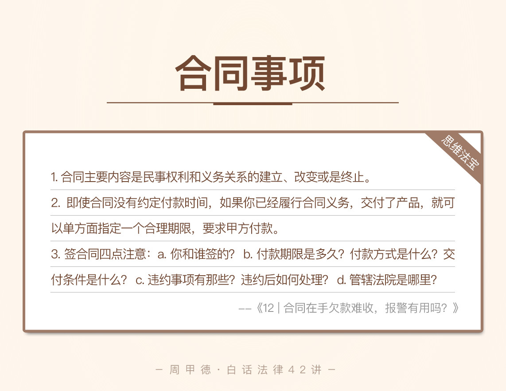

- 00 开篇词 这年头，你真应该懂点法律常识.md
- 01 “老周，我想知道” 常见法律认知盲区（一）.md
- 02 “老周，我想知道” 律师就在你身边（二）.md
- 03 “老周，我想知道” 律师就在你身边（三）.md
- 04 “老周，我想知道” 律师就在你身边（四）.md
- 05 创业未捷老板跑，社保工资哪里讨？.md
- 06 保密还是“卖身”，霸王条款怎么看？.md
- 07 编造流言蹭热度？看守所里降温度！.md
- 08 合同在手欠款难收，报警有用吗？.md
- 09 致创业：谁动了我的股权？.md
- 10 又见猝死！工“殇”究竟是不是工伤？.md
- 11 期权的“前世今生”.md
- 12 裁员面前，你能做的还有什么？.md
- 13 抄袭、盗图为什么做不得？.md
- 14 加班、工资、休假，你知道多少？.md
- 15 受贿原来这么“容易”.md
- 16 今天你用“VPN”了吗？.md
- 17 漏洞在眼前，可以悄悄破解吗？.md
- 18 “爬虫”真的合法吗？.md
- 19 非法集资到底是个啥？.md
- 20 黄色网站？不仅仅是“黄色”罪名.md
- 21 谁修改了我的积分资产？.md
- 22 外挂真能大吉大利吗？.md
- 23 如何看待“从删库到跑路”？.md
- 24 “伪基站”是你的避风港吗？.md
- 25 “网络诈骗”真的离你很远吗？.md
- 26 智斗中介：“北上广”租房图鉴.md
- 27 买买买！买房的“避坑”指南.md
- 28 闪婚又闪离，彩礼怎么理？.md
- 29 离婚还想和平？你要这么做.md
- 30 遗产继承的爱恨情仇.md
- 31 骗术升级？假结婚、假离婚的那些事儿.md
- 32 孩子学校受伤，谁之过？.md
- 33 如何让欠债还钱真正“天经地义”？.md
- 34 从透支到盗刷：人人须知的银行卡纠纷.md
- 35 远离“套路贷”的套路大全.md
- 36 危险！酒驾为什么被罚那么重？.md
- 37 老人倒地，“扶”“不服”？.md
- 38 “能动手就别吵吵”，代价你真的知道吗？.md
- 39 发生交通事故，如何处理？.md
- 40 交通事故综合法宝.md
- 41 婚姻家庭综合法宝.md
- 42 买卖房屋综合法宝.md
- 一键直达 法律专栏“食用”指南.md
- 加餐 “新冠肺炎”影响下，17个常见法律问题解答.md
- 结束语 法律，不会终止的篇章.md
08 合同在手欠款难收，报警有用吗？
去柜台办张银行卡，可以说是最常规的事项，按着流程填内容就行，没几个人不会做。
可是，当银行的小姐姐一下子拿出六七页协议，每一页还都是密密麻麻的字，这时，你是不是在规定的地方直接签字就完事呢？你真的看过每页协议上的内容吗？
估计大多数人的答案是，直接签字呀，反正管它什么内容也得签。不过你有想过，为什么办个银行卡，还要签那么多的协议吗？
因为银行有极高的法律意识，特别善于保护自已。所以他们会把各项权利义务说得清清楚楚，免得出现意外纠纷，陷入被动。
对比之下，我们大笔一挥的动作就显得草率多了，毕竟，这可事关你的权利义务。
可能你还是觉得，这没啥吧？这些协议真的不重要吗？在这方面，我们先来看这么一个案例。
我有个朋友小何做数据工作很有经验，以前在同事介绍下，去给一家汽车公司做外包项目，搭建数据平台。双方正式签过合同，小何这边的工作也积极地按时完成。
然而，在收到前期工作的预付款后，剩下的一半费用却渺无音信。十多万元拖了小半年，到现在还没有结算。小何着急上火要去报警，被我碰到给半路拦下了。我很纳闷这么久都没有得到解决，听了小何的讲述才明白。
原本与小何对接业务的小王从这家公司离职了，而当初签的合同里也没有写清楚付款的期限，所以尾款就一直拖着。小何还是一直和小王联系，小王倒是很负责，也帮忙去和公司沟通，可公司的答复总是只有四个字——“正在办理”。
你来我往就像“踢皮球”，眼看着半年时间都过去了，钱还没到手。小何自然不开心，小王也很委屈，甚至就连介绍此事的同事都跟小何有了隔阂。
看到这里，想必你也疑惑了：
小何遇到的事情究竟能不能报警处理？为什么？
小何是否应该继续向小王要钱？为什么？
合同里竟然没有付款期限，小何怎么办呢？
别急，我们先来了解一下合同和报警的知识。
法律知识
首先我们来了解合同的知识。其实前面的学习中，我们也经常提到合同、协议这样的字眼，这两者只是叫法不同，并没什么本质区别。
在法律上，合同是平等主体之间达成一致意见所签订的协议，内容主要是民事权利和义务关系的建立、改变或是终止，通常发生在个人和个人之间、个人和公司之间、公司和公司之间。
要注意，这里的“平等主体”指的是法律地位平等的两方，因而能够独立自愿地签订合同。怎么理解呢？
举个例子，你作为一名程序员，你和你所在公司的关系就不是平等关系，因为你们双方是管理和被管理的关系。所以你们之间的关系适用于《劳动合同法》，而不是《合同法》。当然，如果你想做些兼职，与别家公司就可以签平等关系的合同。
一旦签订了合同，就要受到合同的约束了。如果你不能按时按量地完成合同义务，就有可能要承担相应的法律责任。比方说，你和别人签了合同，要帮忙写代码，对方也按要求付了定金，注意，这里我说的是有惩罚性质的定金。那如果你因为太忙没空做，或者太难写不出来，就会有麻烦。
你最低的责任可能是还给别人双倍的定金，而如果造成了更大的损失，就还要承担更多的赔偿责任，可以说是很不值当。
从这里也能看出来，前面我们学过的很多知识，都是建立在合同这个白纸黑字的法律证据上的。合同意识，
第二个概念我们来说说报警。大家耳熟能详的“110”热线似乎不必多说，但是你真的了解它吗？
报警的对象是公安机关，公安机关的主要职能，是维护社会治安、保护人民生命财产、并且打击犯罪。你可以通俗理解为，一个人犯了罪，公安机关的角色就是抓人并且暂时关起来，报警便是公安机关发现犯罪线索的重要信息来源。除了拨打“110”，你还可以拨打当地派出所的电话来报警。
日常生活中，如果遇到的是经济合同类的纠纷，或者是不紧急的以及琐碎的杂事，不要拨打“110”，把热线留给真正有需要的人。像是狗丢了、水管漏水了这类就不要去打扰警察叔叔了，你拨打电话的同时，可能有拐卖儿童、持刀杀人等紧急事件的线索，也正在努力挤向公安机关。
情景分析
我们接着来分析小何的情况。第一个问题，显然，小何遇到的是个人与公司之间的合同纠纷，不属于公安的受理范围，所以不能报警处理，警察也不会受理。报警显然是在做无用功。
第二个问题，小王有责任吗？事实上，小何并不能向小王要钱。小王签订合同，只是在履行他本身的职务行为，合同的后果自然是公司来承担。更何况合同本身就是和公司签的，所以小王是没有责任的，小何只能向公司要钱。
第三个问题，也就是公司方面的具体分析。虽然合同里没有规定具体的付款期限，但是小何追欠款已经半年多了，公司的拖欠显然是事实。这已经属于严重违约，小何可以向有管辖权法院提起诉讼。
这里注意下“有管辖权的法院”这句话。一般在合同里会有约定，若发生纠纷需要向哪个法院起诉，如果没有约定，则可以向被告（公司）所在地的法院起诉来解决。
其实，虽然没有约定付款期限，但是小何已经履行了合同义务，在产品已经交付的情况下，小何可以单方面指定一个合理的期限，要求公司付款。公司如果仍然不付款，小何就可以合理地起诉了。
所以，小何起诉的要求里，除了可以追回拖欠款，还可以要求公司承担违约责任，赔偿违约金。即使合同里没有约定具体的违约金，小何也还能要求公司赔偿利息损失。利息损失一般是参照中国人民银行规定的，金融机构计收逾期贷款利息的标准来计算。
小何在“追债之路”上的各种不适，究其原因是没有选择正确的路子。自始至终小何都没有直接联系过公司，都是通过小王间接沟通，这就造成沟通上的延误，也不能当面感受公司的态度。
如果一开始就直接联系公司，早点看清公司拖欠的本质，又何必等上大半年？估计一个律师函就把钱给要回来了。即使没能立马到手，还是走上了诉讼道路，这等小事在法院也是很快就能解决，该得的一分都不会少。
思维“法宝”
签合同是很严肃的事情。很多人嘻嘻哈哈、大笔一挥签了字，未来某一天发生了纠纷，又开始推脱说“当时没看清内容”、“合同不是自愿签的”等各种理由。然而，这些说法如果没证据、没法定理由，是很难被认可的。
事实上，这种似是而非的说辞，哪那么容易找到实锤啊！
这就要求一点，你必须对你签字认可的东西负责。最起码要知道：
你和谁签的？
付款期限是多久？付款方式是什么？交付条件是什么？
违约事项有那些？违约后如何处理？
管辖法院是哪里？

重要的商业合同更是一定要请专业人士把关，千万不能大意。
一旦遭遇了违约，也不要忍气吞声，或者瞎找人，起码我们还有法律保护。只要合同证据充足，走法律的路子你就不会吃亏。
遇到问题不要紧，只要能找到合适的方案。还是那句话，即使无路可走，法律永远还是底线。那么在生活中，你有过类似的经历或者麻烦吗？你又是用什么方法解决的呢？欢迎留言与我分享。
© 2019 - 2023 Liangliang Lee. Powered by gin and hexo-theme-book.